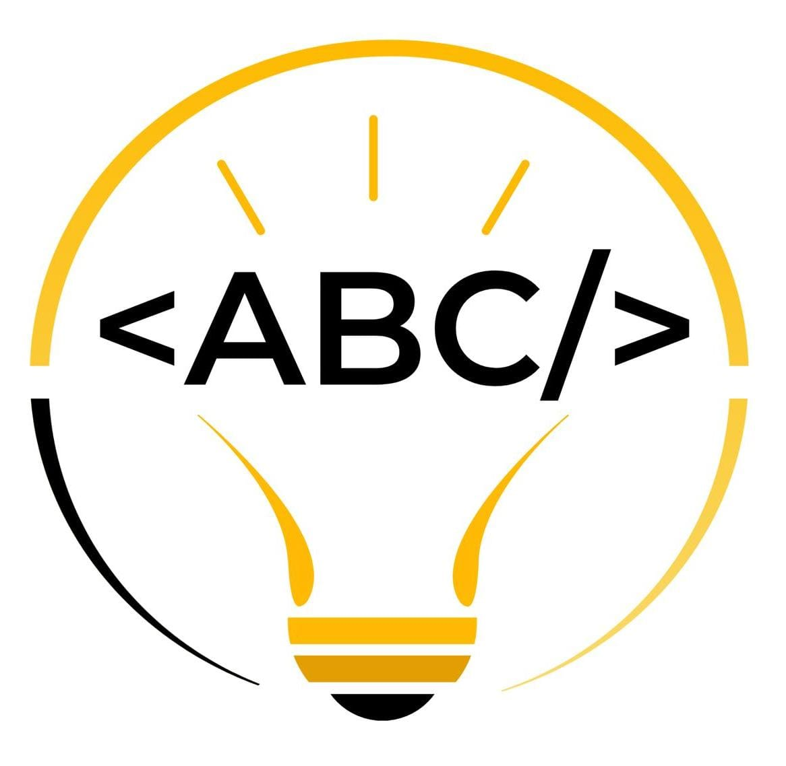

OBI UFABCRecomendação Padrão: Para receber o diagnóstico sob medida para o seu ano escolar e preferências, faça o teste rápido de 3 perguntas.
ANÁLISE CONCLUÍDA
Sua Categoria Recomendada
Com base nas respostas do seu diagnóstico rápido:
Resultado do diagnóstico
Confira sua recomendação de acordo com a escolaridade informada.
Próximos Passos
1. Ver o que estudar para o seu nível
Checklist de tópicos reais e onde praticar
Tópicos prioritários para focar:
- Entrada, saída e estruturas condicionais (if/else)
- Laços de repetição (for/while) e vetores simples
- Simulação passo a passo em Python ou C++
Onde praticar:
2. Ver calendário oficial da OBI
Datas das etapas da edição 2026
Consulte as datas por modalidade e adicione os eventos à sua agenda.
3. Ler regras principais do edital
Resumo direto sem termos complicados
Consulte os materiais e o resumo das regras. Confirme os critérios no regulamento oficial da edição.
Sua escola ainda não participa?
A equipe de extensão da UFABC cadastra sua escola pública ou garante sua participação direto pelo Polo Universitário.